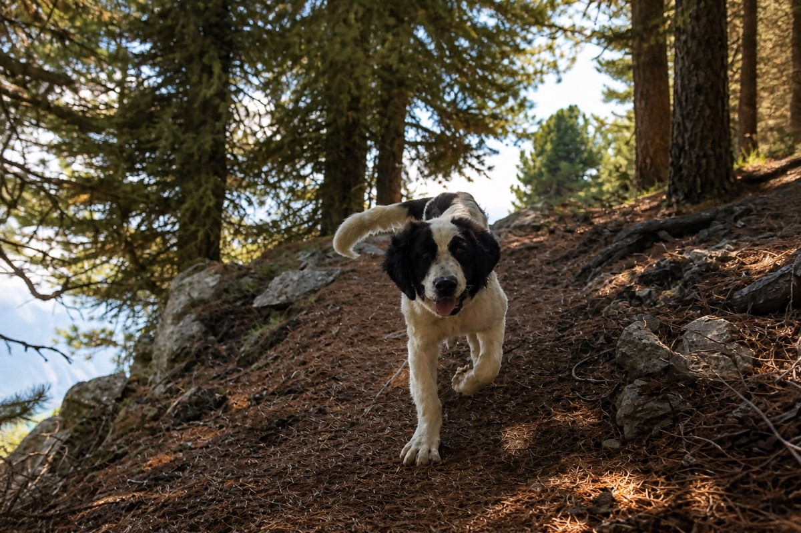

Before you gain height
- Know their normal
Note breathing, gait, appetite and energy before the trip.
- Plan an easy exit
Choose a short route with an early turnaround and a simple descent.

← Back to Safety LibraryAltitude, exertion and heat can look alike. Know your dog’s normal and act early when it changes.
Higher altitude means less available oxygen. Rapid ascent plus exercise can increase breathing and circulation effort, or reveal a heart or respiratory problem that was subtle at home. Stop for a new cough, low stamina or abnormal breathing.
Ask your vet before travelling if your dog has heart or lung disease, coughing, fainting, poor exercise tolerance or a previous problem at elevation. Be extra conservative with puppies, seniors and flat-faced dogs.
No human altitude medication
Never give human altitude or pain medication unless prescribed for your dog. Do not use medication to push through warning signs.
A fit dog can still struggle after a fast drive or lift ascent.
Note breathing, gait, appetite and energy before the trip.
Choose a short route with an early turnaround and a simple descent.
Offer water, take a calm walk and skip the ambitious route on arrival.
Pause early and turn back if breathing, gait or behaviour does not return to normal.
Veterinary material consulted: PetMD and Platt Park Veterinary Hospital guidance on altitude illness in dogs, plus published research on hypoxia and pulmonary pressure. Research does not define one safe recreational threshold for every dog.
This is general information, not a diagnosis or a substitute for veterinary care.